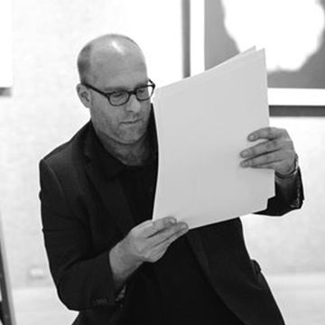

-
PHILLIP PRODGER
4.7
Phillip Prodger, Ph.D. (Cantab.) is Head of Photographs at the National Portrait Gallery, London, where he oversees acquisitions, research, loan and display of photographs from the 19th century to the present. Prodger has held several curatorial posts including at the Saint Louis Art Museum, the National Gallery of Canada, and the Peabody Essex Museum, where he was founding Curator of Photography. The curator of numerous exhibitions worldwide and the author and editor of fourteen books and catalogues, his writings on art and photography have been translated into nine languages. He is the curator of “William Eggleston Portraits”.
wedding California -
SUSAN WHITE
4.7
Susan White has been the photography director of Vanity Fair magazine for more than 20 years. Throughout her tenure, she has worked with many of the industry’s leading photographers, covering a wide array of subject matter. During this time, Vanity Fair received numerous nominations and awards in the photography category from the American Society of Magazine Editors and the Society of Publication Designers. In 2005, Susan was named “Photo Editor of the Year” at the Lucie Awards. wedding Paris
-
JENNIFER PASTORE
3.8
Jennifer Pastore is the photography director of WSJ. The Wall Street Journal Magazine. Previously, she has worked as a photo editor for various magazines including Harper’s Bazaar, Teen Vogue, T: The New York Times Style Magazine and The New York Times Magazine. Jennifer teaches in the BFA photography program of The School of Visual Arts and her work has been recognized by American Photography, ASME, SPD, Graphis, PDN and the Society of Newspaper Design. Jennifer holds a BFA in Graphic Design from the University of Florida. wedding India
-

TODD HIDO
4.7
Todd Hido is a San Francisco Bay Area-based artist whose work has been featured in Artforum, The New York Times Magazine, Eyemazing, Wired, Elephant, FOAM, and Vanity Fair. His photographs are in the permanent collections of the Getty, the Whitney Museum of Art, the Guggenheim Museum, New York, San Francisco Museum of Modern Art, the de Young, the Smithsonian, the Los Angeles County Museum of Art, and Pier 24 Photography, as well as in many other public and private collections. He has over a dozen published books; his monograph titled Excerpts from Silver Meadows was released in 2013.Wedding Paris Nikon D7200
-
GENEVIEVE FUSSELL
4.9
Genevieve Fussell is a Senior Photo Editor at The New Yorker where she commissions and produces a range of photography for the magazine as well as contributing weekly to Photo Booth, The New Yorker’s daily photography blog. Before joining The New Yorker, she worked as the archivist for VII Photo, the international collective of photojournalists based in New York and Paris. She holds a degree in journalism from Cal Poly, San Luis Obispo as well as having studied photography at California College of the Arts. Travel Moroco Canon 80D
-
JIM CASPER
4.7
Jim Casper is the editor-in-chief of LensCulture, one of the leading online destinations to discover contemporary photography from around the world. As an active member in the contemporary photography world, Casper organizes annual international photography events, travels around the world to meet with photographers and review their portfolios, curates art exhibitions, writes about photography and culture, lectures, conducts workshops, serves as an international juror and nominator for key awards, and is an advisor to arts and education organizations. He serves on the board of directors at SPE, the Society for Photographic Education, the world’s largest association of photography educators. Business Event Beijing